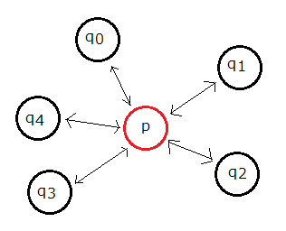
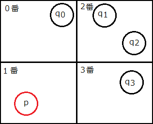
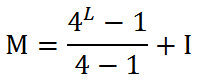
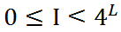

四分木探索（理論編）
・円と円の当たり判定
2次元空間で物体の当たり判定をとることを考えます。
簡単のため物体の当たり判定の形状は円として、座標(x,y)と半径rで表します。
|
bool IsCollision(const Mover &p,const Mover &q){
float dx,dy,dr;
dx=q.x-p.x;//水平方向の距離
dy=q.y-p.y;//鉛直方向の距離
dr=q.r+p.r;//半径の和
//三平方の定理
return ((dx*dx)+(dy*dy)<(dr*dr));//当たっていたらtrue
}
|
移動物体はMoverクラスで扱い、Moverクラスは座標(x,y)と半径rをメンバとして持ちます。
上図のように三平方の定理より円と円の当たり判定をとることができます。
こちら（長方形と円の当たり判定）の最初と同じですね。
今回はこの円と円の当たり判定について考えていきます。
・複数の円との当たり判定
では、一つのオブジェクトpに対して当たり判定をとるべき物体qが複数あったらどうでしょう。
ちょうどpを自機、qを敵の弾と見立てた時の当たり判定です。
pが複数あるqのうちどれか一つにでもあたっているかを調べたい、ということを想定します。

まず思い付くのは上の円と円の当たり判定を全てのqに対して適用することです。
そのうち一つでもtrueならばpはqのどれかに当たっていると分かり、要件を満たします。
多くの場合、これでうまくいきます。
IsCollisionを少し変更すればどのqに当たっているかも返すことができます。
しかしqが非常に多い場合(例えばn=1000個)、当たり判定をとるときのfloat演算による処理時間が莫迦になりません。
この総当たりの方法のオーダーはqの個数n、つまりΟ(n)です。
そもそもこの方式では
こういう配置でも愚直に全探索します。
人の目で見ると明らかに遠すぎて当たるはずがないことがひと目で分かるのに、これは無駄に思えます。
・空間分割
先ほどの画像について、ではこうしたらどうでしょう。

画面を4分割し、同じマス目の中にあるもの同士でのみ当たり判定をとる、としたらどうでしょう。
物体の持つ情報に座標と半径だけでなく、どの空間にいるか(図では0~3の4値)を保持させておき、それぞれリストで保持しておきます。
pが所属する空間のリスト内でのみ当たり判定をとれば違う空間にいる物体のことは判定する必要がありません。
上図ではpの所属する空間は1番ですが、1番の空間にはpの他には物体がありません。
よって当たり判定をとるまでもなくどのqにもぶつかっていない、と分かります。
一見よさそうなアイデアに思いますが、境目でバグります。
そもそも境目に存在する物体の空間番号はどのように表現・保持すればよいでしょうか。
空間を分割するという発想は良いですが、うまく空間にインデックスをつける必要があるようです。
・モートン符号
ただ空間を分割しただけでは不都合が起こることが分かりました。
そこでモートン符号を採用します。
モートン符号は以下のように分割数が異なる空間の重ね合わせで表現する方式です。
境目に存在していたらその一つ上の分割レベルで見て、スッポリ入っているかどうかを見ます。
最悪0番(中心部など)ですが多くの物体はそれより細かい下位レベルのマス目に収まるでしょう。
図中の（レベル）とは空間分割レベルのことで、今回は最大空間分割レベルN=2として分割レベルLを0≤L≤Nとします。
例として以下のようになります。円の中に書かれている番号がその物体のモートン符号です。
境目をまたいでいれば上位の符号
ところでこのインデックスの付け方、違和感がおありでしょうか。
このようにZ字型に割り振られてるのですがこれには当然意味があり、素晴らしい性質を持ちます。
モートン符号は正式には各レベル事に０から始まります。
Z字型です

モートン符号は『下位レベルのインデックスは上位レベルのインデックスの情報を含む』という性質を持ちます。
例えば分割レベル2でのマス14はレベル1では3、レベル0では0となりますが（レベル0は0しかないですが）
14を2進数で表すと
と各レベルで左上([00]=0),右上([01]=1),左下([10]=2),右下([11]=3)のどの位置に存在しているかが2進bitの各2bitずつで分かります。
よって14番に所属している（収まっている）物体は、同じ14番,上位の3番,ルートの0番の空間に所属している物体とだけ当たり判定をとれば良いことが分かります。
それ以外のマスに所属している物体のことは考える必要はありません。
中間レベル(例えばレベル1の2番)に所属している物体は上位空間に加えて下位空間(レベル2の8,9,10,11)とも判定する必要がありますが、
それも簡単に求めることができます。（後述）
・四分木探索（理論編）
○インデックス変換
レベルL,レベル毎のインデックスIから連番のモートン符号Mを求める変換式を先に求めておきます。
↓L,Iから変換 = M
空間の個数は分割レベルが増えるごとに4倍になっているので、初項1,公比4の等比級数の和として
・・・（１）
と求めることができます。
Mの最大は、L=Nとして
・・・（２）
上式よりL=N=2の時、Mmax=20となります。合っていますね。
○点座標からモートン符号
では実際の点座標p(x,y)からモートン符号を求めてみたいと思います。
計算には四則演算、及びbit演算を用いてο(1)で行います。
大きさを持たない(r=0)ただの点なので境界線をまたぐことはありません。
よって最大分割レベルL=N=2のインデックスとしてIを求めます。
まずp(x,y)から単純に2^N格子としての座標を求めます。
上図においてx,yそれぞれについて
float sx,sy,kx,ky;
//格子の一辺の長さ
sx=(FMX-FX)/(2^N); sy=(FMY-FY)/(2^N);
//格子座標
kx=(x-FX)/(2^N); ky=(y-FY)/(2^N);
次に格子座標(kx,ky)を以下のように操作します。
例えば(kx,ky)=(2,3)の時を考えます。2進数です。
これで求めたかったIがI=[11 10]=14と求まりました。
Lは2と決まっているので、これで（１）式より(L,I)からMが求められます。
これで座標からモートン符号を求めることができました。
○大きさのある物体からモートン符号
それではいよいよr>0の円を考えます。座標p(x,y),半径rからモートン符号Mを求めます。
これもο(1)で可能です。
まず円を囲むボックスの座標を求めます。
中心p(x,y)と半径rが分かっているのでこれはすぐ分かります。
使うのは左上と右下の座標a,bです。a,bをPoint型として
Point a,b;
//左上
a.x=p.x-r; a.y=p.y-r;
//右下
b.x=p.x+r; b.y=p.y+r;
そしてa,bのモートン符号を求めます。
これは前節の座標からモートン符号の求め方より分かり、その関数をPointtoMorton(Point p)とすると
//モートン符号
int ma,mb;
ma=PointtoMorton(a);
mb=PointtoMorton(b);
maとmbが一致していれば円全体が最大レベルL=Nのどれかのマスの中にスッポリ入っています。（境界線をまたいでいない）
maとmbが異なる場合、以下の操作を行います。
- maとmbの排他的論理和をとる
- その結果の下位から2bitずつ読み込み、0でない値をとる最高位の区切りをkとする
- L=N-k
- I=mb>>(2*k)
この操作によりL,Iを求めて、（１）よりMを求めます。
例えば上図のようにma=12,mb=15とすると
ma 12 : 11 00
mb 15 : 11 11
ma^mb : 00 11
k : 2 1
↓k=1
L=N-k=1
I=[11 11] >> 2*k=[11]=3
kはちょうどLと対になる値を表し、L=N-kより分割レベルLが求まります。
Iは物体を囲むボックスの右下のモートン符号mbを2*kだけ右シフトした値となります。
（何故mbなのかと言うとI=ma^(ma^mb)>>2kよりI=mb>>2k,これはbit演算の性質a^(a^b)=bを用いています）
ma=3,mb=15とすると、k=2となりL=0,I=0となります。つまりルート空間の0番に所属していると分かります。大きいですからね。
ついでに言っておくとIは必ず以下の範囲内にあります。逆に範囲外の値をとったらエラー起こしてます。

とりあえずこれで大きさのある物体のモートン符号を求めることができました。
次のページから実際に当たり判定をとるまでの実装を考えていきたいと思います。
->四分木探索（実装編）へ